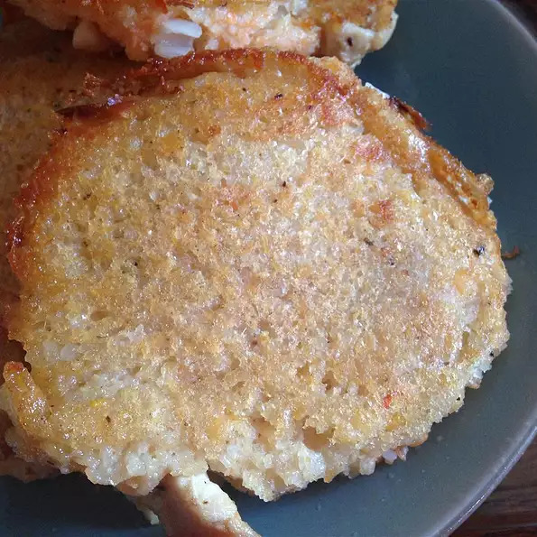

Pesarattu

Definition
This is a Andhra specialty. Pesarattu is a dosa made with Pesara Pappu (moong dal).
You use the moong dal with skin on and this is what gives this dosa the classic green color. Of course this dosa is high in protein and fiber.
Serve it with upma rolled inside and it becomes an 'MLA pesarattu'.
This is a heavy lentil batter and does not keep very well. Use up the batter within 2 days.
Ingredients
- 2 cups skin-on, whole green lentils (sabut moong dal)
- 1 cup uncooked white rice
- 5 green chile peppers
- 1 (1/2 inch) piece fresh ginger root, peeled
- 1 tablespoon cumin seeds
- salt to taste
- cooking spray
- 6 tablespoons chopped onion (Optional)
Steps
- Place the lentils and rice into a large container and cover with several inches of cool water; let stand 4 hours to overnight.
- Blend the lentils, rice, green chile peppers, and ginger together into a smooth paste using a blender or food processor. Stir the cumin seed and salt into the paste.
- Prepare a flat griddle (tawa) or large, flat-bottomed skillet and place over medium-low heat. Ladle the lentil batter onto the middle of the heated surface and spread into a thin circle using the back of the ladle. Sprinkle with 1 tablespoon of onions and press the onions onto the pesarattu using your ladle or spatula. Cook for a few minutes and flip over to the other side. Cook a few more minutes, transfer to a plate and serve immediately. Dosas are best eaten hot and crispy right off the tawa.